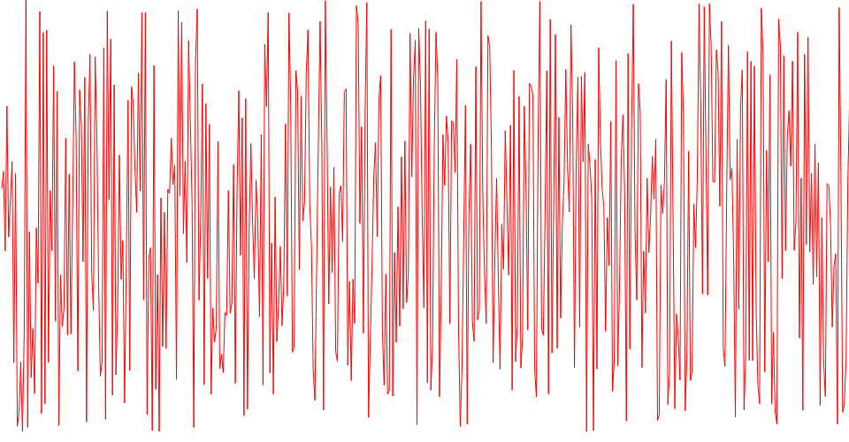

3D Ultrasonic Color Flow Imaging With Grayscale Invert
0003. Another known technique for fetal imaging is known as “invert imaging.” In invert imaging, the conven tional grayscale range which generally shows structures in the body which return strong echoes as brightly displayed and anechoic structures such as blood which return little echo energy as dark, in an inverted grayscale range. This reversal of the grayscale range results in the blood inside of vessels as shown brightly lighted with the tissue of the surrounding vessels dimly displayed or invisible, thereby highlighting blood pools and vessel blood flow. See, for instance, U.S. Pat. No. 6,117,080 (Schwartz), which applies this technique in the detection of fluid-filled cysts. 
0004. The use of the fetal STIC technique in combination with invert imaging has provided clinicians with new insight into the structure of the fetal heart. This is important because the clinician is often presented with the problem of assessing the fetal heart for normal or abnormal formation and function. The conventional 3D invert image, by itself, does not provide any information about the hemodynamics of the heart. For that, the clinician must turn instead to another image, typi cally a cross-sectional color flow slice through the Volume to assess blood flow velocity, and mentally correlate the flow of the cross-sectional color flow image with the 3D grayscale image formed with the invert technique. Accordingly it would be desirable to provide the clinician with a single imaging technique which simultaneously provides the vascular flow path information of an invert ed image and the flow velocity information of the color flow slice.
0005. In accordance with the principles of the present invention, 3D grayscale data is combined with 3D color flow data to allow them to be visualized together. In an illustrated example of the invention, the 3D projection of the surface rendering of the color volume data is combined with the 3D projection of the surface rendering of the “inverted grayscale Volume data to produce an image of the two together. In this example the process of combining the two 3D projections compares the value of the grayscale projection data at a given pixel location with the value of the color projection data at the same pixel location. If the grayscale value is below a certain threshold, only the grayscale value is used for the image pixel in the combined image. If the grayscale value is above that threshold, the grayscale value is added to the color value and Apr. 22, 2010 that new value is used for the image pixel in the combined image. Other, image data algorithms can also be used to enhance features of the image.